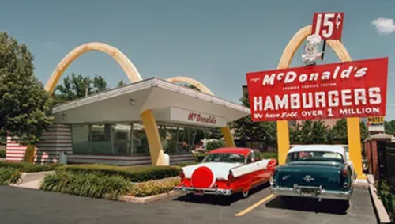

Pros
- Multiple revinue streams
- High markups on items like drinks
- Flexibility
- Health and safety requirements
- High failure rate
- High starting costs
Owning a restaurant offers several advantages, you can build multiple revenue streams not just from meals, but from things like drinks, add ons, delivery or take out. Events or catering helps out with the ups and downs of daily sales. Also, high markups on certain items like drinks (alcoholic or non alcoholic) can provide strong margins, meaning that even modest sales of those items contribute disproportionately to profits. And you also get flexibility, you can adapt menus, vary your offerings, adjust hours or service styles in response to customer demand or changing costs. On the flip side, some serious drawbacks need to be considered. Complying with health and safety requirements is mandatory but expensive, from licensing, inspections, ensuring food safety, sanitation, staff training, to paying for upgrades when standards change. The failure rate in the restaurant world is high many new restaurants don’t survive past the first few years because of competition, cost overruns, poor location choice, or underestimating how hard it is to run a hospitality business. And the starting costs are high rent, fit out, kitchen equipment, staffing, initial supply inventory, plus all the permits and licences upfront investment is large, and cash flow can be tight at the start.
Recession resilience
In 2020, many restaurants took a big hit dine in trade dropped sharply or shut entirely during lockdowns, which meant huge revenue loss. But some places managed to ride it out by leaning hard into take out, delivery, and online orders, which became lifelines. Others pivoted fast, simplifying menus, using local suppliers, or finding creative ways to stay connected with customers. Still, despite those efforts, many couldn’t recover, high fixed costs like rent, staff, and equipment didn’t go away, and the uncertainty made planning hard. The ones who survived often did so because they were flexible, had multiple revenue streams, or adapted quickly to restrictions.

Survival rates
How could you start?
Opening a restaurant begins with a clear concept, decide what type of food you’ll serve, the kind of service (fast casual, fine dining, takeaways), and what will make your place different. Then build a business plan that lays this out, your target customers, menu, pricing, costs, how you’ll market it, and financial expectations. Once you know what you want to do, figure out how to fund it personal savings, investors, loans and make sure you have enough money not just for the startup but for several months of operating while customer numbers build. Next, pick a good location, visibility, foot traffic, cost, and suitability for your concept all matter. You’ll need to get all the necessary permits and licences (Food Safety, health and building codes), buy or lease equipment, hire staff you trust, and design the place so both front of house and kitchen work efficiently. Finally, don’t forget to promote the launch create buzz in your community, use social media, maybe host a soft opening to test things first so when you do open, people know who you are and want to come.